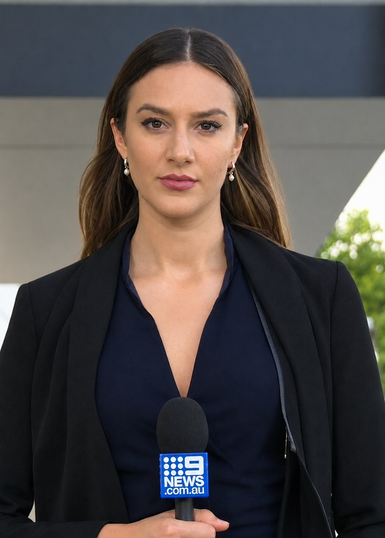

Kat Stefanovic
OSINT Journalist + Storyteller
Kat is an open-source intelligence (OSINT) journalist based in London.
A Swiss Army knife journalist who has worked across radio, television and digital media over her nine-year career.
Kat is a passionate journalist, committed to unearthing the truth. She has carved out a career built on curiosity and tenacity.
Kat has experience in radio, presenting national bulletins to audiences across Australia. Her first love was television, where she enthusiastically said yes to it all: working as an executive producer, steering a bureau as chief of staff, and hitting the road as a breaking news reporter (her favourite role of all).
Kat loves getting out into new communities and exploring new cultures, but most of all, telling people’s stories and shining a light on those who have been overlooked or marginalised.
In a world where AI is blurring the lines between what is real and what is fake, Kat is drawn to the world of OSINT journalism. As a senior verification journalist at Storyful, she helps other newsrooms avoid publishing artificially generated footage, and find footage of breaking news from some of the most isolated parts of the world.
Work with Kat
Get in touchAbout
The story so far
- NowSenior verification journalist, StoryfulLondon · OSINT and verification
- BeforeBreaking news reporterFar north Queensland · her favourite role
- BeforeExecutive producer and chief of staffTelevision, Australia
- StartRadio, 2GBCadetship, then presenting national bulletins
Kat is an open-source intelligence (OSINT) journalist based in London.
A Swiss Army knife journalist who has worked across radio, television and digital media over her nine-year career.
Kat is a passionate journalist, committed to unearthing the truth. She has carved out a career built on curiosity and tenacity.
Kat has experience in radio, presenting national bulletins to audiences across Australia. Her first love was television, where she enthusiastically said yes to it all: working as an executive producer, steering a bureau as chief of staff, and hitting the road as a breaking news reporter (her favourite role of all).
Kat loves getting out into new communities and exploring new cultures, but most of all, telling people’s stories and shining a light on those who have been overlooked or marginalised.
In a world where AI is blurring the lines between what is real and what is fake, Kat is drawn to the world of OSINT journalism. As a senior verification journalist at Storyful, she helps other newsrooms avoid publishing artificially generated footage, and find footage of breaking news from some of the most isolated parts of the world.
Portfolio